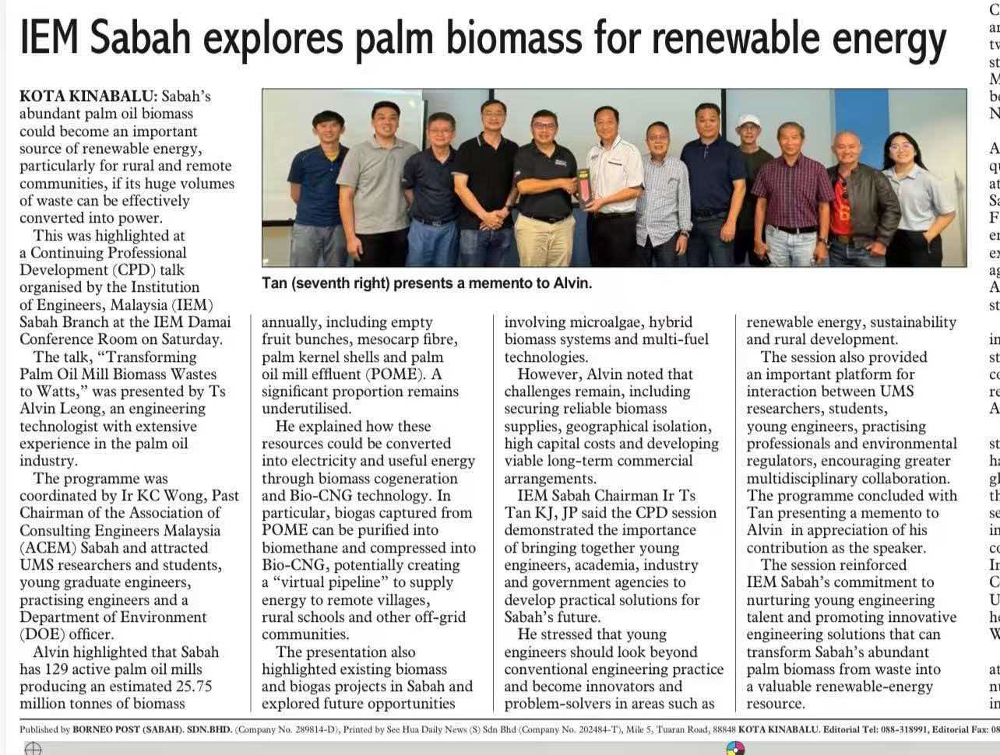
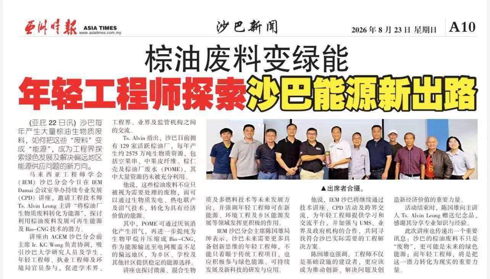

Tentang KSTS
KSTS K. S. Technical Services ialah syarikat perkhidmatan teknikal milik Bumiputera berdaftar CIDB yang berpangkalan di Telupid, Sabah. Kami melaksanakan projek biogas dan bio tenaga untuk sektor kelapa sawit dan industri pertanian di Sabah dan Sarawak.
Syarikat
Ditubuhkan untuk berkhidmat kepada estet dan kilang di jalur Labuk–Sugut dan Telupid, KSTS merangkumi skop awam, mekanikal dan elektrik, serta memegang pendaftaran berkanun yang diperlukan loji biogas sebelum boleh beroperasi secara sah.
| Nama berdaftar | KSTS K. S. TECHNICAL SERVICES |
| Pendaftaran | MPS: R14722/2009 |
| Status | Syarikat Status Bumiputera Sabah · Kontraktor Berdaftar CIDB |
| Pangkalan | Kg. Nangoh, Telupid, Sabah |
| Liputan | Sabah dan Sarawak |
Pengarah Urusan
Dikenali sebagai Alvin · B.Eng.Tech(Mech Eng)(USQ)• Eng Tech (BEM)• ASEAN Eng Tech (AER)• IncIEM• MMOSTA• Grad Tech (MBOT)• TMIEAust
Alvin Leong telah menempuh 22 tahun dalam industri pengilangan kelapa sawit dan ladang di Sabah. Beliau membina kerjayanya di sebuah kilang kelapa sawit di Sandakan (Kilang Kelapa Sawit Fortuna Sdn Bhd), dari Penolong Pengurus Kilang & Jurutera Projek sehingga mengetuai operasi dan pembangunan, dan kini berkhidmat sebagai Pengarah Urusan KSTS. Kerjanya merangkumi operasi dandang stim tiub air biomas berasaskan sawit untuk penjanaan CHP, projek pembangunan teknologi hijau termasuk pengkomposan biomas sawit untuk baja berbutir, tiga pemasangan ESP lapangan untuk kawalan pencemaran udara, dan kajian kemungkinan penjanaan kuasa biogas POME.
Operasi dron: Juruterbang Dron Bertauliah CAAM (B) & AGRI (2).
| 2004 | Universiti Southern Queensland (Australia) — B.Eng.Tech (Kejuruteraan Mekanikal) |
| 2006 | Lembaga Minyak Sawit Malaysia (MPOB) — Diploma, Proses & Pengurusan Kilang Kelapa Sawit |
| — | NIOSH Malaysia — latihan Keselamatan dan Kesihatan Pekerjaan |


Dalam berita
Alvin Leong ialah penceramah dalam ceramah Pembangunan Profesional Berterusan IEM Cawangan Sabah, “Transforming Palm Oil Mill Biomass Wastes”, di Kota Kinabalu. Sesi itu merangkumi kogenerasi dan Bio-CNG daripada tempurung isirung sawit, gentian sawit dan POME, serta tiga kekangan yang menentukan sama ada projek benar-benar dibina: bekalan biomas yang boleh dipercayai, kos modal, dan pengaturan komersial jangka panjang.
Sabah mempunyai 129 kilang kelapa sawit aktif yang menghasilkan kira-kira 25.75 juta tan biomas setahun — asas sumber bagi setiap kapasiti yang kami kira.
Rakan teknologi
Kejuruteraan, enjin gas dan peralatan peningkatan datang dari pengeluar China dengan rekod eksport. KSTS ialah rakan dalam negara: data tapak, kebenaran, kerja awam, pemasangan, pemeriksaan berkanun dan operasi.
| Fungsi | KSTS (Malaysia) | Rakan teknologi (China) |
|---|---|---|
| Tinjauan tapak & pengukuran gas | Ya | Protokol dan tafsiran |
| Reka proses & imbangan gas | Semakan | Ya |
| Pembuatan peralatan | — | Ya |
| Pelaksanaan awam / mekanikal | Ya (CIDB) | Penyeliaan |
| Pentauliahan & saksi DOSH | Ya | Jurutera di tapak |
| O&M | Ya | Diagnostik jauh, alat ganti |
Mengapa penting
Kualiti gas, waranti enjin dan kerja awam bertemu di satu antara muka.
Mengapa penting
Pemeriksaan FMA 1967, pelaporan DOSH dan ECOS dikendalikan pasukan reka bentuk.
Mengapa penting
Bekalan terus, biasanya 25–35% lebih rendah daripada harga peralatan Eropah.
Cara kami bekerja
Langkah 1
Kemampuan, isipadu kolam, satu hingga dua minggu data gas, tarif dan profil beban.
Langkah 2
Imbangan gas, kapasiti disyorkan, capex dan opex indikatif, julat pulangan. Percuma.
Langkah 3
P&ID, lukisan GA, pemilihan peralatan, sebut harga tetap dan model komersial.
Langkah 4
Bekal, pasang, tauliah, saksi DOSH, latihan, kemudian O&M jika perlu.